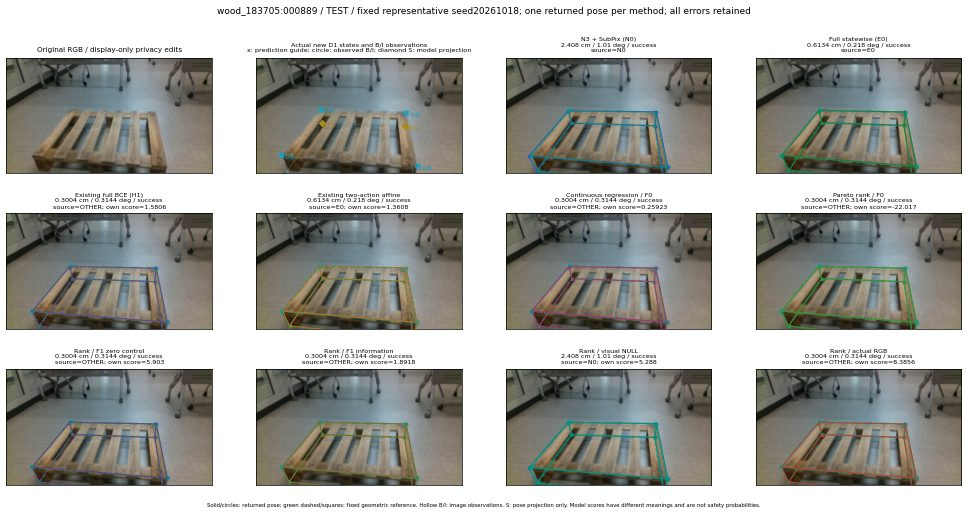

실선은 반환 자세, 초록 점선은 고정 기하 참조입니다. S는 영상 관측이 아닙니다. 점수는 모델별 의미가 다르며 보정된 안전 확률이 아닙니다. 개인정보 처리는 표시 사본에만 적용했습니다.
| 방법·seed | 위치 / 회전 / 공동성공 | 실제 출처 | 선택 후보 | 각 모델 자체 점수 |
|---|---|---|---|---|
| N0 | 2.408 cm / 1.01 deg / success | N0 | N/A | N/A |
| E0 | 0.6134 cm / 0.218 deg / success | E0 | N/A | N/A |
| E0_REGENERATED | 0.6134 cm / 0.218 deg / success | E0 | E0_REGENERATED | N/A |
| POSEFIX_SUBPIX_PF_ANCHOR | 1.048 cm / 0.9875 deg / success | OTHER | N/A | N/A |
| POSEFIX_SUBPIX_YOLO_ANCHOR | 1.056 cm / 0.9889 deg / success | OTHER | N/A | N/A |
| D1_H1_MLP_s20261018 | 0.3004 cm / 0.3144 deg / success | OTHER | P1/ORIGINAL_WD/selected | 1.5805870294570923 |
| D1_H1_MLP_s20261019 | 0.3004 cm / 0.3144 deg / success | OTHER | P1/ORIGINAL_WD/selected | 1.1630035638809204 |
| D1_H1_MLP_s20261020 | 0.3004 cm / 0.3144 deg / success | OTHER | P1/ORIGINAL_WD/selected | 2.5367558002471924 |
| D1_H1_PAIR_MLP_s20261018 | 0.6134 cm / 0.218 deg / success | E0 | E0_REGENERATED | 0.44508862495422363 |
| D1_H1_PAIR_MLP_s20261019 | 0.6134 cm / 0.218 deg / success | E0 | E0_REGENERATED | 1.1332941055297852 |
| D1_H1_PAIR_MLP_s20261020 | 0.6134 cm / 0.218 deg / success | E0 | E0_REGENERATED | 1.1394048929214478 |
| D1_H1_PAIR_ROLE_AFFINE_s20261018 | 0.6134 cm / 0.218 deg / success | E0 | E0_REGENERATED | 1.3607743978500366 |
| D1_H1_PAIR_ROLE_AFFINE_s20261019 | 0.6134 cm / 0.218 deg / success | E0 | E0_REGENERATED | 1.673279881477356 |
| D1_H1_PAIR_ROLE_AFFINE_s20261020 | 0.6134 cm / 0.218 deg / success | E0 | E0_REGENERATED | 1.1799428462982178 |
| R_CONT_F0_s20261018 | 0.3004 cm / 0.3144 deg / success | OTHER | P1/ORIGINAL_WD/selected | 0.2592287063598633 |
| R_CONT_F0_s20261019 | 0.3004 cm / 0.3144 deg / success | OTHER | P1/ORIGINAL_WD/selected | 0.361587256193161 |
| R_CONT_F0_s20261020 | 0.3004 cm / 0.3144 deg / success | OTHER | P1/ORIGINAL_WD/selected | 0.3993542492389679 |
| R_ORDER_F0_s20261018 | 0.3004 cm / 0.3144 deg / success | OTHER | P1/ORIGINAL_WD/selected | -22.016685485839844 |
| R_ORDER_F0_s20261019 | 0.3004 cm / 0.3144 deg / success | OTHER | P1/ORIGINAL_WD/selected | -11.736891746520996 |
| R_ORDER_F0_s20261020 | 0.3004 cm / 0.3144 deg / success | OTHER | P1/ORIGINAL_WD/selected | 6.621959209442139 |
| R_ORDER_F1_ZERO_s20261018 | 0.3004 cm / 0.3144 deg / success | OTHER | P1/ORIGINAL_WD/selected | 5.902980804443359 |
| R_ORDER_F1_ZERO_s20261019 | 0.3004 cm / 0.3144 deg / success | OTHER | P1/ORIGINAL_WD/selected | -8.463115692138672 |
| R_ORDER_F1_ZERO_s20261020 | 0.3004 cm / 0.3144 deg / success | OTHER | P1/ORIGINAL_WD/selected | 1.9508610963821411 |
| R_ORDER_F1_s20261018 | 0.3004 cm / 0.3144 deg / success | OTHER | P1/ORIGINAL_WD/selected | 1.8917882442474365 |
| R_ORDER_F1_s20261019 | 0.6134 cm / 0.218 deg / success | E0 | E0_REGENERATED | 4.864176273345947 |
| R_ORDER_F1_s20261020 | 0.3004 cm / 0.3144 deg / success | OTHER | P1/ORIGINAL_WD/selected | 0.568301796913147 |
| V_ORDER_NULL_s20261018 | 2.408 cm / 1.01 deg / success | N0 | N0 | 5.287960052490234 |
| V_ORDER_NULL_s20261019 | 0.6134 cm / 0.218 deg / success | E0 | E0_REGENERATED | 1.936837077140808 |
| V_ORDER_NULL_s20261020 | 0.3004 cm / 0.3144 deg / success | OTHER | P1/ORIGINAL_WD/selected | 0.7206150889396667 |
| V_ORDER_RGB_s20261018 | 0.3004 cm / 0.3144 deg / success | OTHER | P1/ORIGINAL_WD/selected | 8.385583877563477 |
| V_ORDER_RGB_s20261019 | 0.6134 cm / 0.218 deg / success | E0 | E0_REGENERATED | 2.8075203895568848 |
| V_ORDER_RGB_s20261020 | 0.3004 cm / 0.3144 deg / success | OTHER | P1/ORIGINAL_WD/selected | -7.26646614074707 |